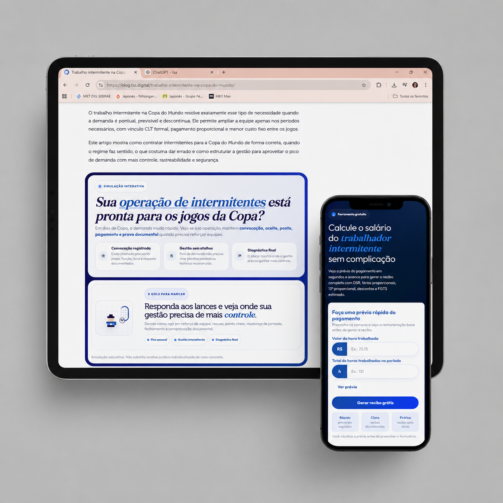

TIO Digital
No TIO Digital, o desafio é traduzir regras trabalhistas e rotinas operacionais em conteúdo acionável para empresas. A escrita precisa educar sem simplificar demais, reforçar segurança jurídica e aproximar o leitor de ferramentas que reduzem erro manual.
- Tipo de entrega
- Artigos de blog + HTML interativo
- Recorte
- Trabalho intermitente
- Função
- Busca, educação e conversão B2B

Peças publicadas — 4
Jornada intermitente: regras, limites e controleGuia sobre jornada, limites legais, controle de ponto e riscos operacionais.SEO · Jornada ↗ Banco de horas no trabalho intermitente: é permitido?Conteúdo educativo para explicar por que o banco de horas é inseguro no regime intermitente.SEO · Risco jurídico ↗ Empregado intermitente pode trabalhar todos os dias?Artigo para esclarecer continuidade, convocação e limites legais de prestação de serviço.SEO · Limites ↗ Desconto de faltas no trabalho intermitenteConteúdo sobre aceite, falta, recusa e quando o desconto pode ser aplicado com segurança.SEO · Pagamento ↗